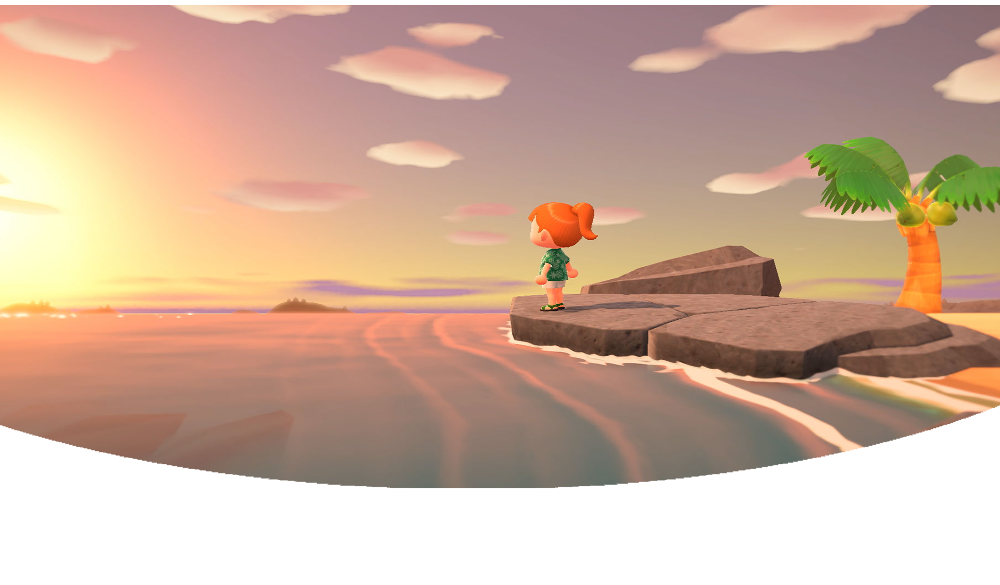
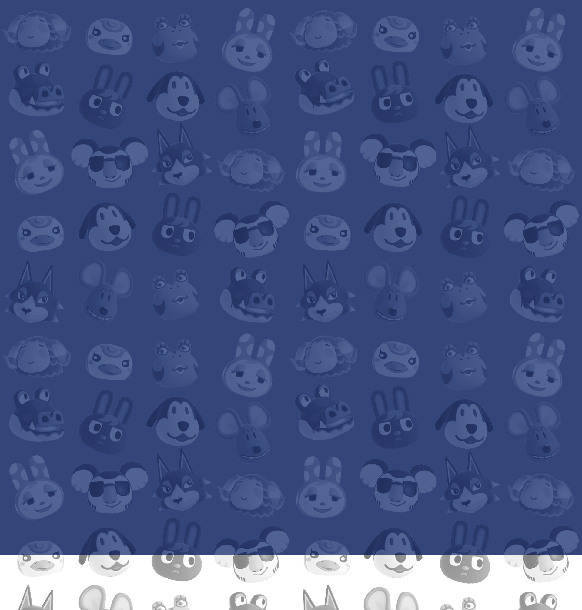
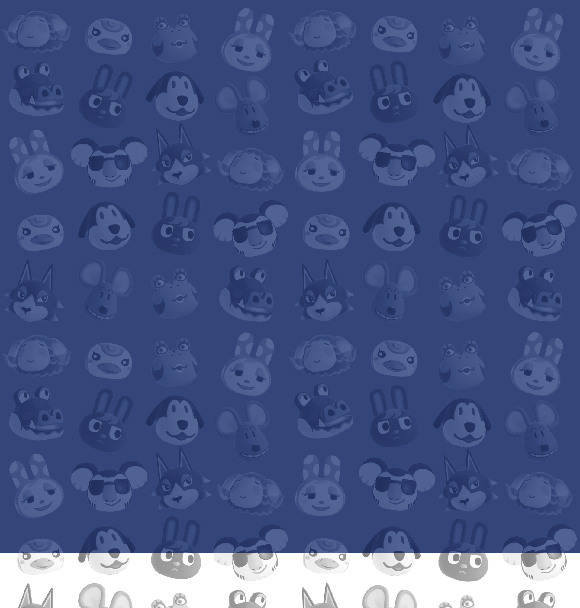

Before he became the tanuki he is today, Tom Nook started life as just a simple country boy. Nook grew up in a small rural town with little to his name. From a young age, Nook dreamed of fame and fortune. He would go on to leave his small home behind to pursue his career in the big city.


 
